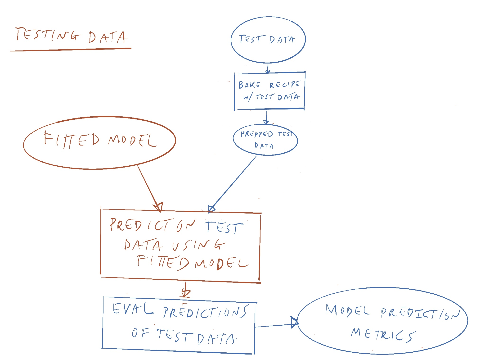

Workflow with Packages


{rsample}{recipes}tidymodels functions associated with them.pull-left[ ## Statistical Modeling
.pull-right[ ## (Supervised) Machine Learning
tidymodelsThe different sections of tidymodels are designed to be useful in a tidy workflow and roughly map to the different steps and requirements of a machine learning workflow.
tidymodels workflowThese are the major packages where tidymodels is used in machine learning.
{rsample} - use these functions to specify a test/training set, or to build a cross-validation set, or for bootstrap sampling{recipes} - use these functions to normalize variables and process them for use in machine learning, also known as feature engineering.{parsnip} - use these functions to specify and train your model{workflows} - use a model and recipe together (allows you to switch out models and use them reproducibly){yardstick} - use these functions to evaluate your model (accuracy on test data)
rsample::initial_split()The function initial_split() from rsample package in tidymodels handles splitting data into test/train sets.
all_features_split <- initial_split(all_features,
prop = 3/4)
all_features_train <- training(all_features_split)
all_features_test <- testing(all_features_split)
recipe| Step | Function | Data_type |
|---|---|---|
| Imputing missing data | step_knnimpute() | all_numeric(), all_nominal() |
| Transform variables for skewness | step_BoxCox(), step_log() | all_numeric() |
| Discretize continuous variables | step_cut(), step_discretize() | all_numeric() |
| Normalize data (center, scale, etc) | step_normalize() | all_numeric() |
| Create Dummy Variables | step_dummy() | all_nominal() |
| Identify highly correlated variables | step_corr() | all_numeric() |
| Create Interactions | step_interact() | all_numeric(), all_nominal() |
| Multivariate transformation | step_pca(), step_ica() | all_numeric() |


collect_metrics() from tidymodels allows you to calculate metrics on predictions including:
Talk more about this in RStudio cloud notebook.